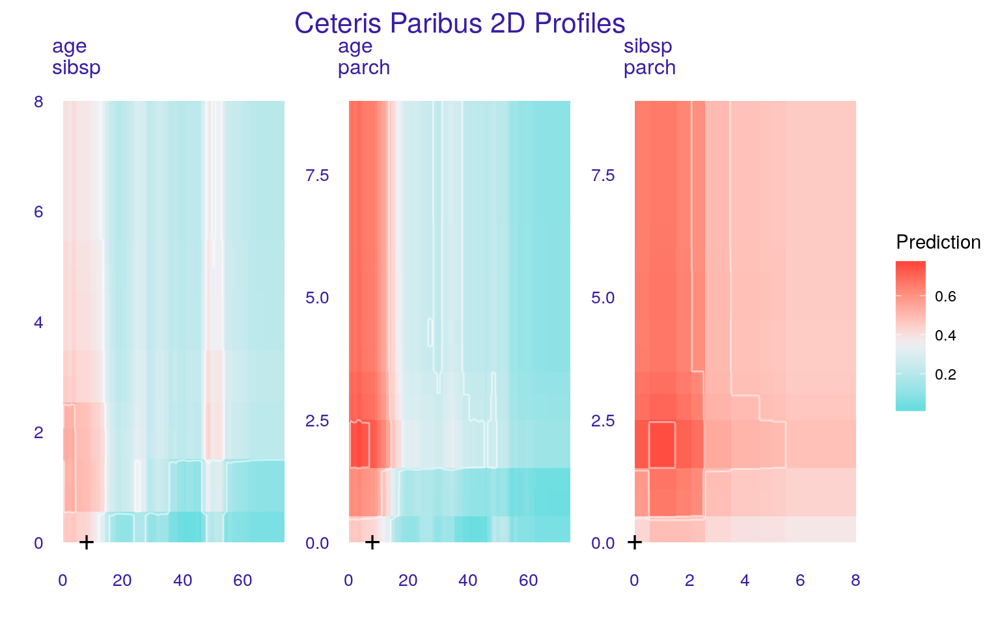

Chapter 6 Ceteris-Paribus 2D Profiles - a tool for pairwise interactions
6.1 Introduction
The definition of Ceteris Paribus profiles, given in Section 4, may be easily extended to two or more explanatory variables. Also, the definition of the variance importance measure \(vip^{CP}_j(x^*)\) have a straightforward extension for a larger number of variables.
Such extension is useful to identify or visualize of pairwise interactions between variables.
6.2 Intuition
Figure 6.1 presents a response surface for a titanic_lmr_v6 model for two explanatory variables, age and sibsp, from the titanic dataset (see Section 2.1). We are interested in the change of the model prediction induced by each of the variables.

Figure 6.1: (fig:profile2d) Ceteris-paribus profile for a pair of explanatory variables for a model titanic_lmer_v6 for age and sibsp variables.
6.3 Method
The definition of Ceteris Paribus profiles may be easily extended to two or more explanatory variables. A two-dimensional Ceteris Paribus profile for model \(f\), explanatory variables \(j\) and \(k\), and point \(x^*\) is defined as follows:
\[ CP^{f, (j,k), x^*}(z_1, z_2) \equiv f(x^*|^{(j,k)} = (z_1,z_2)). \]
Ceteris Paribus 2D profile is a function that provides the dependence of the prediction of the model on the values of \(j\)-th and \(k\)-th explanatory variables \(z_1\) and \(z_2\), respectively, where \(z_1\) and \(z_2\) are taken to go through the range of values typical for the variables, and values of all other variables in \(x^*\) are kept fixed at the values present in \(x^*\).
The corresponding variance importance measure would be defined as follows: \[ vip^{CP}_{j,k}(x^*) = \int_{\mathcal R}\int_{\mathcal R} |CP^{f,(j,k),x^*}(z_1,z_2) - f(x^*)| g^{j,k}(z_1,z_2)dz_1dz_2=E_{X_j,X_k}[|CP^{f,j,x^*}(X_j,X_k) - f(x^*)|], \] where the expected value is taken over the joint distribution of the \(j\)-th and \(k\)-th explanatory variable.
Such multi-dimensional extensions are useful to check if, for instance, the model involves interactions. In particular, presence of pairwise interactions may be detected with two-dimensional (2D) CP profiles.
A natural way to visualize 2D CP profiles is to use a heat map for all pairs of explanatory variables as in Figure 6.2.

Figure 6.2: (fig:profile2dAll) Ceteris-paribus profile for all pairs of explanatory variables for a titanic_lmer_v6 model. Black cross marks the coordinates of the point of interest.
If the number of pairs of explanatory variables is small or moderate, then it is possible to present 2D CP profiles for all pairs of variables.
If the number of pairs is large, we can use the variable importance measure to order the pairs based on their importance and select the most important pairs for purposes of illustration.
6.4 Pros and cons
Two-dimensional CP profiles can be used to identify the presence of pairwise interactions in a model.
But number of pairs may be large and 3d profiles are more difficult to read than 1d profiles.
6.5 Code snippets for R
In this section we present key features of the R package ingredients (Biecek 2019) which is a part of DALEXverse and covers all methods presented in this chapter. More details and examples can be found at https://modeloriented.github.io/ingredients/.
There are also other R packages that offer similar functionality, like condvis (O’Connell, Hurley, and Domijan 2017) or ICEbox (Goldstein et al. 2015b).
In this section we use a random forest (Breiman et al. 2018) model titanic_rf_v6 developed for the Titanic dataset (see Section 2.1). In particular, we deal with a binary classification problem - we want to predict the probability of survival for a selected passenger.
titanic <- archivist::aread("pbiecek/models/27e5c")
titanic_rf_v6 <- archivist::aread("pbiecek/models/31570")library("DALEX")
library("randomForest")
explain_titanic_rf <- explain(model = titanic_rf_v6,
data = titanic[,-9],
y = titanic$survived == "yes",
label = "Random Forest v6")In order to calculate oscillations we need to first calculate Ceteris Paribus profiles for a selected observation.
Let us use the johny_d instance again.
johny_d <- data.frame(
class = factor("1st", levels = c("1st", "2nd", "3rd", "deck crew", "engineering crew",
"restaurant staff", "victualling crew")),
gender = factor("male", levels = c("female", "male")),
age = 8,
sibsp = 0,
parch = 0,
fare = 72,
embarked = factor("Southampton", levels = c("Belfast", "Cherbourg", "Queenstown", "Southampton"))
)2D profiles are calculated with the ceteris_paribus_2d() function. By default all pairs between continuous variables are being plotted, but one can limit number of variables for consideration through the variables argument.
library("ingredients")
library("ggplot2")
wi_rf_2d <- ceteris_paribus_2d(explain_titanic_rf, observation = johny_d, variables = c("age", "sibsp", "parch"))
head(wi_rf_2d)## y_hat new_x1 new_x2 vname1 vname2 label
## 1 0.444 0.1666667 0.00 age sibsp Random Forest v6
## 1.1 0.444 0.1666667 0.08 age sibsp Random Forest v6
## 1.2 0.444 0.1666667 0.16 age sibsp Random Forest v6
## 1.3 0.444 0.1666667 0.24 age sibsp Random Forest v6
## 1.4 0.444 0.1666667 0.32 age sibsp Random Forest v6
## 1.5 0.444 0.1666667 0.40 age sibsp Random Forest v6Result is an object of the class ceteris_paribus_2d_explainer with overloaded print() and plot() function.
plot(wi_rf_2d) +
theme(legend.position = "right", legend.direction = "vertical") + ggtitle("Ceteris Paribus 2D Profiles")
In the presented example both variables age and sibsp are important and influence the model response.
References
Biecek, Przemyslaw. 2019. Ingredients: Effects and Importances of Model Ingredients. https://ModelOriented.github.io/ingredients/.
O’Connell, Mark, Catherine Hurley, and Katarina Domijan. 2017. “Conditional Visualization for Statistical Models: An Introduction to the Condvis Package in R.” Journal of Statistical Software, Articles 81 (5): 1–20. doi:10.18637/jss.v081.i05.
Goldstein, Alex, Adam Kapelner, Justin Bleich, and Emil Pitkin. 2015b. “Peeking Inside the Black Box: Visualizing Statistical Learning with Plots of Individual Conditional Expectation.” Journal of Computational and Graphical Statistics 24 (1): 44–65. doi:10.1080/10618600.2014.907095.
Breiman, Leo, Adele Cutler, Andy Liaw, and Matthew Wiener. 2018. RandomForest: Breiman and Cutler’s Random Forests for Classification and Regression. https://CRAN.R-project.org/package=randomForest.